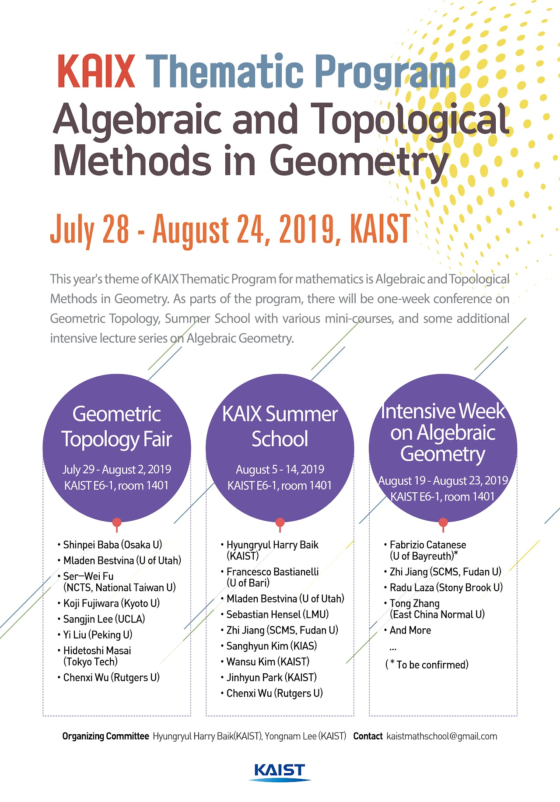
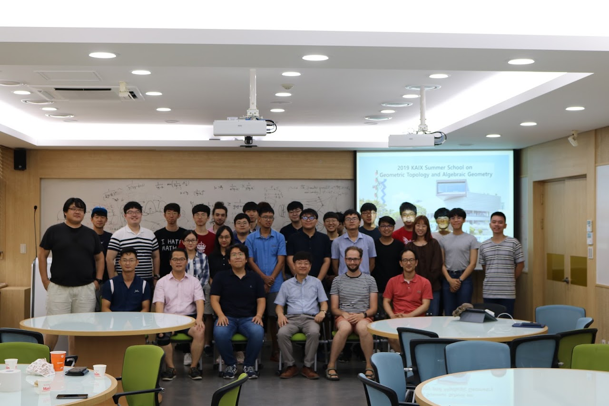

KAIX-summer-school-2019
KAIST Advanced Institute for Science-X (KAIX) hosts a thematic program this summer. As a part of the program, there will be a summer school on mathematics from August 4th to August 15th. This year's theme is "Algebraic and Topological Methods in Geometry." and organized by Prof. Hyungryul Baik and Prof. Yongnam Lee.


If you want to participate, please register. For registration, send us an email to kaixmathschool(at)gmail.com and
say you would like to participate.
For participants from overseas, we have limited amount of funding for financial support.
Here is a direction for how to come to Daejeon and KAIST.
For domestic participants, we have no financial support.
There are some reasonable housing options around the campus, we list a few of them just for your information:
https://www.toyoko-inn.com/eng/search/detail/00234/
All talks are at the building E6-1, Room 1401,
but coffee breaks and the banquet dinner on August 8th will be at Room 1410.
The schedule is as in the table below.
The lectures will cover topics including: basic hyperbolic geometry, mapping class groups, translation surfaces,
outer-automorphisms of free groups, groups acting on the circle, basic algebraic geometry.
The list of the speakers and the subject of the lectures include (abstracts of the lectures will be added in due course):
Harry Baik (KAIST): Introduction to mapping class groups and their normal generators
Abstract: Mapping class groups are ubiquitous object in geometric group theory and low-dimensional topology. We will give a basic introduction to mapping class groups, and how to understand their elements and subgroups.
References:
- Lecture note by prof. Caroline Series. http://homepages.warwick.ac.uk/~masbb/Papers/MA448.pdf
- Farb, Benson, and Dan Margalit. A primer on mapping class groups (pms-49). Princeton University Press, 2011.
- Löh, Clara. Geometric group theory. Springer International Publishing AG, 2017.
Francesco Bastianelli (Università degli Studi di Bari Aldo Moro): Measures of irrationality for projective varieties
Abstract: There has been a great deal of recent interest and progress in studying issues of rationality for algebraic varieties. The purpose of these lectures is to investigate a complementary circle of questions: in what manner can one quantify and control `how irrational' a given complex projective variety X might be? I will consider various birational invariants measuring the failure of X to be rational. In particular, I will focus on the `degree of irrationality’ (i.e. the least degree of a dominant rational map from X to the projective space) and the `covering gonality’ (i.e. the minimal gonality of a family of curves covering X). Initially, I will introduce these ideas and discuss various examples. Then I will present some techniques based on positivity properties of canonical bundles, which lead to lower bounds for those birational invariants. Finally, I will show how these techniques can be used to describe the invariants for hypersurfaces of large degree in the complex projective space.
References:
- F. Bastianelli, R. Cortini and P. De Poi, The gonality theorem of Noether for hypersurfaces, J. Algebraic Geom. 23 (2014), 313-339.
- F. Bastianelli, P. De Poi, L. Ein, R. Lazarsfeld, B. Ullery, Measures of irrationality for hypersurfaces of large degree, Compos. Math. 153 (2017), 2368-2393.
- F. Bastianelli, Irrationality issues for projective surfaces, Boll. Unione Mat. Ital. 11 (2018), 13-25.
- F. Bastianelli, C. Ciliberto, F. Flamini, P. Supino, Gonality of curves on general hypersurfaces, J. Math. Pures Appl. 125 (2019), 94-118.
The files of each reference can be downloaded from https://sites.google.com/site/francescobastianelli/pubblicazioni
Mladen Bestvina (University of Utah): Projection complexes and applications
Abstract: An immersed geodesic in a hyperbolic surface lifts to a collection of lines in hyperbolic plane satisfying certain simple properties regarding nearest point projections of one line to another. We start with a collection of metric spaces (such as lines) satisfying axioms motivated by this example and "reverse engineer" to construct an ambient space ("projection complex") that contains them all. This is useful for constructing new spaces a given group acts on. I will explain this construction (originally joint work with Ken Bromberg and Koji Fujiwara, and there is a streamlined version joint also with Alex Sisto) and discuss several applications.
Exercises for the course can be found here!
Sebastian Hensel (LMU): (Virtual) Homology Representations of mapping class groups
Abstract: A basic and well-understood way to understand mapping classes of surfaces is the action on the homology of the surface. However, it is equally well-known that this representation has a large kernel (the Torelli group) and therefore this approach is unable to extract all information about mapping classes. In this sequence of lectures we will discuss how, if one considers instead the action on the homology of finite covers, much more information about mapping classes can be extracted -- and at the same time, interesting representations of mapping classes can be obtained.
Zhi Jiang (Fudan University): Generic vanishing theory and its geometric applications
Abstract: Generic vanishing theory is important in the study of irregular varieties which are smooth projective varieties with nonzero first Betti numbers. We will recall the classical generic vanishing theory of Green and Lazarsfeld and report some recent advances due to Hacon, Pareschi-Popa-Schnell, Chen-Jiang, etc.. We will also give some geometric applications of generic vanishing theory, including classifications of varieties with small birational invariants and Fujita-type results on varieties with large irregularities.
References:
1) J.A. Chen, Z. Jiang, Z.Tian, Irregular varieties with geometric genus one, theta divisors, and fake tori, Adv. Math.320 (2017), 361-390.
2) O. Debarre, Z. Jiang, M. Lahoz, appendix by W. Sawin, Rational cohomology tori, Geom. Topol. 21 (2017), 1095-1130
3) Z. Jiang, M. Lahoz, S. Tirabassi, On the Iitaka fibration of varieties of maximal Albanese dimension, Int. Math. Res. Not. (2013), no. 13, 2984–3005.
4) G. Pareschi and M. Popa, GV-sheaves, Fourier-Mukai transform, and Generic Vanishing, Amer. J. of Math.133 (2011), 235–271.
5) G. Pareschi, M. Popa, Ch. Schnell: Hodge modules on complex tori and generic vanishing for compact Kahler manifolds, Geometry & Topology 21 (2017) 2419-2460
Sanghyun Kim (KIAS): Rigid subgroups of circle diffeomorphism groups
Abstract: For each r ≥ 1, we investigate group theoretic properties the topological group Diff^r(S^1), the C^r—diffeomorphism group of the circle. Starting with the infinite cyclic groups, we gradually build up results implying that the possible faithful C^r—actions of certain finitely generated groups are surprisingly rigid. These groups include abelian groups, right-angled Artin groups, surface groups and mapping class groups.
Wansu Kim (KAIST): Introduction to algebraic curves and Jacobian varieties Part II
Abstract: This is the continuation of Jinhyun Park’s lecture series. In the second half, we focus more on abelian varieties defined over the complex field, with emphasis on the example of jacobians of curves. The topics to be covered are
- Complex tori (of any dimension)
- Line bundles on a complex torus
- Polarization of complex tori and projective embeddings
- Jacobians of complex algebraic curves
Reference:
1) David Mumford, Abelian Varieties, Chapter 1 (main reference)
2) Christina Birkenhake, Herbert Lange, Complex Abelian varieties
3) Raghavan Narasimhan, Compact Riemann Surfaces
Jinhyun Park (KAIST): Introduction to algebraic curves and Jacobian varieties Part I (Lectures 1, 2, 3)
Abstract: In this Part I of the lectures, we concentrate on the study of algebraic curves over the complex field. When they have no singularities, they are equal to what are called Riemann surfaces, seen as manifolds over the real field. This is a quick introduction to the subject, that is meant to prepare the students for the second part, as well as deeper subjects in geometry. The objects studied form basic examples in all of algebraic and complex geometry, topology and complex analysis. This Part I will mostly concentrate on - the language of manifolds and complex manifolds, in particular Riemann surfaces and algebraic curves over C - the notion of line bundles and divisors on Riemann surfaces - the embedding theorem for smooth projective algebraic curves - basic Hodge decomposition - Riemann-Roch theorem and applications.
In Part II, continued by Wansu Kim, will study important invariants called Jacobians associated to algebraic curves, and their generalizations called abelian varieties and complex tori.
Chenxi Wu (Rutgers University): Introduction to L^2 invariants
Abstract: I will give an elementary introduction to L^2 methods on cell complexes and then present some of their applications in combinatorics, geometry and topology.
Reference:
Wolfgang Lueck, L^2-Invariants: Theory and Applications to Geometry and K-Theory, Chapter 1-3.
If you have any question, please email kaixmathschool(at)gmail.com